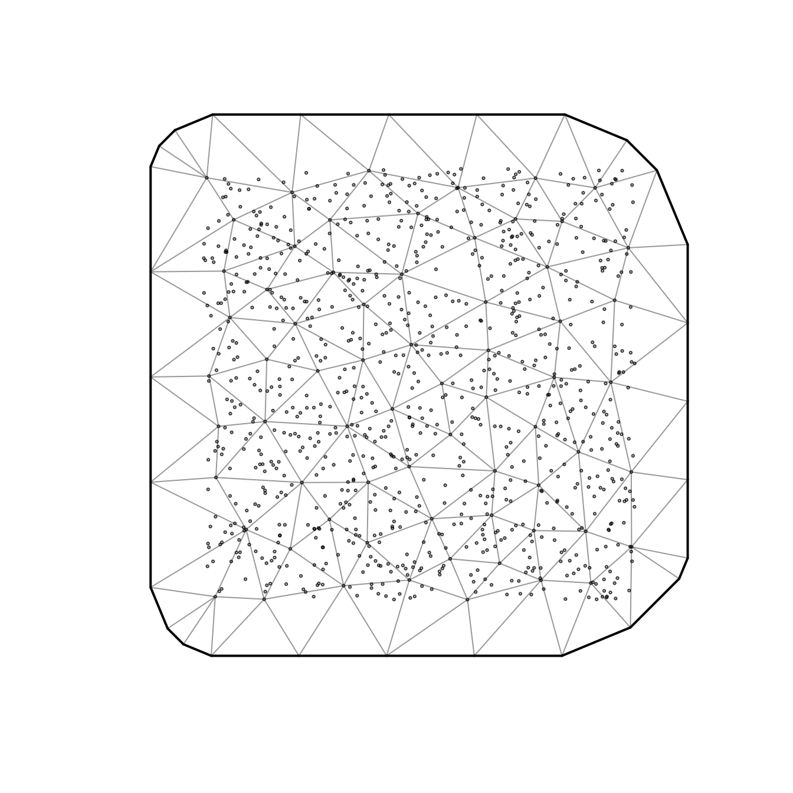

Fitting multispecies models with sdmTMB
2025-11-22
Source:vignettes/articles/multispecies.Rmd
multispecies.RmdIf the code in this vignette has not been evaluated, a rendered version is available on the documentation site under ‘Articles’.
For some applications, we might be interested in fitting a model that includes multiple responses such as 2+ species, or multiple size or age classes within a species. This is a form of multivariate model. The most important step in fitting these models is understanding which parameters are shared, and which parameters are species-specific.
Below, we illustrate a series of models. We’ll start by simulating a
2-species dataset. Each species is allowed to have unique spatial
standard deviations (sigma_O) as well as different year
effects.
set.seed(1)
predictor_dat <- data.frame(
X = runif(1000), Y = runif(1000),
year = rep(1:5, each = 200)
)
predictor_dat$fyear <- as.factor(predictor_dat$year)
mesh <- make_mesh(predictor_dat, xy_cols = c("X", "Y"), cutoff = 0.1)
sim_dat_A <- sdmTMB_simulate(
formula = ~ 0 + fyear,
data = predictor_dat,
time = "year",
mesh = mesh,
range = 0.2,
family = gaussian(),
seed = 42,
sigma_O = 0.2,
phi = 0.1,
sigma_E = 0.3,
B = runif(5, min = 5, max = 8) # 5 random year effects
)
sim_dat_A$species <- "A"
sim_dat_B <- sdmTMB_simulate(
formula = ~ 0 + fyear,
data = predictor_dat,
time = "year",
mesh = mesh,
range = 0.2,
family = gaussian(),
seed = 43,
sigma_O = 0.3,
phi = 0.1,
sigma_E = 0.3,
B = runif(5, min = 5, max = 8) # 5 random year effects
)
sim_dat_B$species <- "B"
sim_dat <- rbind(sim_dat_A, sim_dat_B)
sim_dat$fyear <- factor(sim_dat$year)We’ll start by making an SPDE mesh across the full dataset.

Model 1: species-specific intercepts
As a first model, we can include species-specific year effects. This
can be done in a couple ways. One option would be to estimate the
species * year interaction, letting the year effects for
each species be independent. Here, all other parameters and random
effect values (range, spatial field, spatial variance, spatiotemporal
fields, spatiotemporal variances) are shared.
fit <- sdmTMB(
observed ~ fyear * species,
data = sim_dat,
time = "year",
spatiotemporal = "iid",
mesh = mesh,
family = gaussian()
)
fit
#> Spatiotemporal model fit by ML ['sdmTMB']
#> Formula: observed ~ fyear * species
#> Mesh: mesh (isotropic covariance)
#> Time column: year
#> Data: sim_dat
#> Family: gaussian(link = 'identity')
#>
#> Conditional model:
#> coef.est coef.se
#> (Intercept) 7.59 0.05
#> fyear2 0.36 0.05
#> fyear3 0.02 0.05
#> fyear4 -1.19 0.05
#> fyear5 -1.93 0.05
#> speciesB -1.49 0.03
#> fyear2:speciesB 0.02 0.04
#> fyear3:speciesB -0.71 0.04
#> fyear4:speciesB 0.70 0.04
#> fyear5:speciesB 3.45 0.04
#>
#> Dispersion parameter: 0.27
#> Matérn range: 0.19
#> Spatial SD: 0.17
#> Spatiotemporal IID SD: 0.14
#> ML criterion at convergence: 329.263
#>
#> See ?tidy.sdmTMB to extract these values as a data frame.Model 2: species-specific spatial fields
We may be interested in fitting a model that lets the spatial
patterning differ by species. These kinds of models can be expressed
using spatially varying coefficients. Note that we use
spatial = off because this represents a global spatial
intercept—turning this off is akin to using a -1 of
0 in a main formula including a factor. Both species take
their spatial fields from the spatial_varying field
here.
fit <- sdmTMB(
observed ~ fyear * species,
data = sim_dat,
mesh = mesh,
family = gaussian(),
spatial = "off",
time = "year",
spatiotemporal = "iid",
spatial_varying = ~ 0 + factor(species)
)
fit
#> Spatiotemporal model fit by ML ['sdmTMB']
#> Formula: observed ~ fyear * species
#> Mesh: mesh (isotropic covariance)
#> Time column: year
#> Data: sim_dat
#> Family: gaussian(link = 'identity')
#>
#> Conditional model:
#> coef.est coef.se
#> (Intercept) 7.60 0.06
#> fyear2 0.36 0.05
#> fyear3 0.04 0.05
#> fyear4 -1.22 0.05
#> fyear5 -1.94 0.05
#> speciesB -1.51 0.08
#> fyear2:speciesB 0.02 0.03
#> fyear3:speciesB -0.75 0.03
#> fyear4:speciesB 0.76 0.03
#> fyear5:speciesB 3.48 0.03
#>
#> Dispersion parameter: 0.19
#> Matérn range: 0.18
#> Spatially varying coefficient SD (factor(species)A): 0.25
#> Spatially varying coefficient SD (factor(species)B): 0.30
#> Spatiotemporal IID SD: 0.16
#> ML criterion at convergence: -170.949
#>
#> See ?tidy.sdmTMB to extract these values as a data frame.You’ll notice that there are two rows of entries for
sigma_Z our spatially varying random field standard
deviation:
tidy(fit, "ran_pars")
#> # A tibble: 5 × 5
#> term estimate std.error conf.low conf.high
#> <chr> <dbl> <dbl> <dbl> <dbl>
#> 1 range 0.181 0.0250 0.139 0.238
#> 2 phi 0.189 0.00330 0.183 0.195
#> 3 sigma_E 0.162 0.0129 0.139 0.190
#> 4 sigma_Z 0.250 0.0268 0.203 0.308
#> 5 sigma_Z 0.302 0.0303 0.248 0.367This means that our model is trying to estimate separate species-specific variance terms for the species-specific spatial fields (say that 10 times fast!). Here, that matches how we simulated the data. In other contexts, especially if we ran into estimation issues, we might want to share those SDs.
If we wanted to estimate species-specific spatial fields with a
single shared variance (meaning the net magnitude of the peaks and
valleys in the fields were similar but the wiggles themselves were
species specific), we could do that by specifying a custom map argument
and passing it into sdmTMBcontrol(). Any shared factor
levels in the map are gathered to have ‘mirrored’ or shared
parameter values. We assign these to ln_tau_Z because,
internally, this is the parameter that gets converted into the
spatially-varying field variances (the SDs of those fields are
sigma_Z).
This case is pretty simple, but for more complicated cases we could
figure out the structure of our needed map vector as
follows:
colnames(model.matrix(~ 0 + factor(species), data = sim_dat))
#> [1] "factor(species)A" "factor(species)B"So, we need a vector of length two with shared factor values:
Then, we can use our map list to share the spatially varying coefficient SDs:
fit <- sdmTMB(
observed ~ fyear * factor(species),
data = sim_dat,
mesh = mesh,
family = gaussian(),
spatial = "off",
time = "year",
spatiotemporal = "iid",
spatial_varying = ~ 0 + factor(species),
control = sdmTMBcontrol(map = map_list)
)
fit
#> Spatiotemporal model fit by ML ['sdmTMB']
#> Formula: observed ~ fyear * factor(species)
#> Mesh: mesh (isotropic covariance)
#> Time column: year
#> Data: sim_dat
#> Family: gaussian(link = 'identity')
#>
#> Conditional model:
#> coef.est coef.se
#> (Intercept) 7.60 0.06
#> fyear2 0.35 0.05
#> fyear3 0.04 0.05
#> fyear4 -1.23 0.05
#> fyear5 -1.94 0.05
#> factor(species)B -1.51 0.08
#> fyear2:factor(species)B 0.02 0.03
#> fyear3:factor(species)B -0.75 0.03
#> fyear4:factor(species)B 0.76 0.03
#> fyear5:factor(species)B 3.48 0.03
#>
#> Dispersion parameter: 0.19
#> Matérn range: 0.18
#> Spatially varying coefficient SD (factor(species)A): 0.28
#> Spatially varying coefficient SD (factor(species)B): 0.28
#> Spatiotemporal IID SD: 0.16
#> ML criterion at convergence: -170.110
#>
#> See ?tidy.sdmTMB to extract these values as a data frame.Notice the spatially varying coefficient SD is now shared.
Model 3: species-specific spatiotemporal fields
In all of the examples above, spatiotemporal fields are included, but shared among species. As another example, we can extend the above approaches to set up a model that includes spatiotemporal fields unique to each species.
One approach to including separate spatiotemporal fields by species
is creating a new variable that is a concatenation of species and year
(or any given time step factor). For example, we can then implement this
form of species-specific spatiotemporal variation by changing the
time argument to be time = "species_year".
sim_dat$species_year <- factor(paste(sim_dat$species, sim_dat$year))
map_list <- list(ln_tau_Z = factor(c(1, 1)))
fit <- sdmTMB(
observed ~ fyear * factor(species),
data = sim_dat,
mesh = mesh,
family = gaussian(),
spatial = "on",
time = "species_year",
spatiotemporal = "iid",
spatial_varying = ~ 0 + factor(species),
control = sdmTMBcontrol(map = map_list)
)
fit
#> Spatiotemporal model fit by ML ['sdmTMB']
#> Formula: observed ~ fyear * factor(species)
#> Mesh: mesh (isotropic covariance)
#> Time column: species_year
#> Data: sim_dat
#> Family: gaussian(link = 'identity')
#>
#> Conditional model:
#> coef.est coef.se
#> (Intercept) 7.56 0.07
#> fyear2 0.38 0.08
#> fyear3 0.06 0.08
#> fyear4 -1.19 0.08
#> fyear5 -1.92 0.08
#> factor(species)B -1.43 0.10
#> fyear2:factor(species)B -0.03 0.11
#> fyear3:factor(species)B -0.79 0.11
#> fyear4:factor(species)B 0.67 0.11
#> fyear5:factor(species)B 3.41 0.11
#>
#> Dispersion parameter: 0.10
#> Matérn range: 0.16
#> Spatial SD: 0.06
#> Spatially varying coefficient SD (factor(species)A): 0.24
#> Spatially varying coefficient SD (factor(species)B): 0.24
#> Spatiotemporal IID SD: 0.31
#> ML criterion at convergence: -917.577
#>
#> See ?tidy.sdmTMB to extract these values as a data frame.Model 4: species-specific spatiotemporal fields using the
spatial_varying argument
We can fit the same model by using the spatial_varying
argument. This would give us the added flexibility of letting each
species’ spatiotemporal field have its own variance if we wanted or if
expanding our model to have another category of independent random
fields. E.g., we might also have age or length bins.
First, we’ll have the spatial fields share their variance and the spatiotemporal fields share their variance:
# quick hack to force all levels of species and species:factor interactions in formula:
mm1 <- model.matrix(~ 0 + factor(species), sim_dat)
mm2 <- model.matrix(~ 0 + factor(year):factor(species), sim_dat)
mm <- cbind(mm1, mm2)
sim_dat2 <- cbind(sim_dat, mm)
# make our map vector:
n_sp <- ncol(mm1)
n_st <- ncol(mm2)
map_list2 <- list(ln_tau_Z = factor(
c(rep(1, n_sp),
rep(2, n_st))
))
map_list2
#> $ln_tau_Z
#> [1] 1 1 2 2 2 2 2 2 2 2 2 2
#> Levels: 1 2
# hack together a model formula based on our hand constructed model matrix:
svc_formula <- as.formula(paste0("~ `", paste(colnames(mm), collapse = "` + `"), "`"))
svc_formula
#> ~`factor(species)A` + `factor(species)B` + `factor(year)1:factor(species)A` +
#> `factor(year)2:factor(species)A` + `factor(year)3:factor(species)A` +
#> `factor(year)4:factor(species)A` + `factor(year)5:factor(species)A` +
#> `factor(year)1:factor(species)B` + `factor(year)2:factor(species)B` +
#> `factor(year)3:factor(species)B` + `factor(year)4:factor(species)B` +
#> `factor(year)5:factor(species)B`
fit_svc <- sdmTMB(
observed ~ fyear * factor(species),
data = sim_dat2,
mesh = mesh,
family = gaussian(),
spatial = "off",
time = "year",
spatiotemporal = "off",
spatial_varying = svc_formula,
control = sdmTMBcontrol(map = map_list2)
)We now have exactly the same model, just specified differently:
Say we wanted to let the spatial and spatiotemporal variances be different for each species. We could do that by changing the map vector:
colnames(mm)
#> [1] "factor(species)A" "factor(species)B"
#> [3] "factor(year)1:factor(species)A" "factor(year)2:factor(species)A"
#> [5] "factor(year)3:factor(species)A" "factor(year)4:factor(species)A"
#> [7] "factor(year)5:factor(species)A" "factor(year)1:factor(species)B"
#> [9] "factor(year)2:factor(species)B" "factor(year)3:factor(species)B"
#> [11] "factor(year)4:factor(species)B" "factor(year)5:factor(species)B"
map_list3 <- list(ln_tau_Z = factor(
c(c(1, 2),
rep(3, n_st/2),
rep(4, n_st/2)
)))
# check:
data.frame(map_value = map_list3$ln_tau_Z, svc_term = colnames(mm))
#> map_value svc_term
#> 1 1 factor(species)A
#> 2 2 factor(species)B
#> 3 3 factor(year)1:factor(species)A
#> 4 3 factor(year)2:factor(species)A
#> 5 3 factor(year)3:factor(species)A
#> 6 3 factor(year)4:factor(species)A
#> 7 3 factor(year)5:factor(species)A
#> 8 4 factor(year)1:factor(species)B
#> 9 4 factor(year)2:factor(species)B
#> 10 4 factor(year)3:factor(species)B
#> 11 4 factor(year)4:factor(species)B
#> 12 4 factor(year)5:factor(species)B
fit_svc_separate <- sdmTMB(
observed ~ fyear * factor(species),
data = sim_dat2,
mesh = mesh,
family = gaussian(),
spatial = "off",
time = "year",
spatiotemporal = "off",
spatial_varying = svc_formula,
control = sdmTMBcontrol(map = map_list3)
)
fit_svc_separate
#> Spatial model fit by ML ['sdmTMB']
#> Formula: observed ~ fyear * factor(species)
#> Mesh: mesh (isotropic covariance)
#> Time column: year
#> Data: sim_dat2
#> Family: gaussian(link = 'identity')
#>
#> Conditional model:
#> coef.est coef.se
#> (Intercept) 7.56 0.07
#> fyear2 0.38 0.08
#> fyear3 0.06 0.08
#> fyear4 -1.19 0.08
#> fyear5 -1.92 0.08
#> factor(species)B -1.43 0.10
#> fyear2:factor(species)B -0.03 0.11
#> fyear3:factor(species)B -0.79 0.11
#> fyear4:factor(species)B 0.67 0.11
#> fyear5:factor(species)B 3.42 0.11
#>
#> Dispersion parameter: 0.10
#> Matérn range: 0.16
#> Spatially varying coefficient SD (`factor(species)A`): 0.21
#> Spatially varying coefficient SD (`factor(species)B`): 0.28
#> Spatially varying coefficient SD (`factor(year)1:factor(species)A`): 0.31
#> Spatially varying coefficient SD (`factor(year)2:factor(species)A`): 0.31
#> Spatially varying coefficient SD (`factor(year)3:factor(species)A`): 0.31
#> Spatially varying coefficient SD (`factor(year)4:factor(species)A`): 0.31
#> Spatially varying coefficient SD (`factor(year)5:factor(species)A`): 0.31
#> Spatially varying coefficient SD (`factor(year)1:factor(species)B`): 0.30
#> Spatially varying coefficient SD (`factor(year)2:factor(species)B`): 0.30
#> Spatially varying coefficient SD (`factor(year)3:factor(species)B`): 0.30
#> Spatially varying coefficient SD (`factor(year)4:factor(species)B`): 0.30
#> Spatially varying coefficient SD (`factor(year)5:factor(species)B`): 0.30
#> ML criterion at convergence: -918.900
#>
#> See ?tidy.sdmTMB to extract these values as a data frame.Now we have separate SDs for the spatial and spatiotemporal fields across species.
But in this case, marginal AIC does not indicate an improvement from this added flexibility:
AIC(fit_svc, fit_svc_separate)
#> df AIC
#> fit_svc 14 -1807.035
#> fit_svc_separate 16 -1805.801Model 5: hack species into the time element for spatial models
If we only wanted to fit a spatial model but had several species (or other groups), one approach is to pretend our species (or other group) is the time element.
sim_dat$numeric_species <- as.numeric(factor(sim_dat$species)) # needs to be numeric
fit_fake_time <- sdmTMB(
observed ~ 0 + factor(species),
data = sim_dat,
mesh = mesh,
family = gaussian(),
spatial = "off",
time = "numeric_species", #< hack
spatiotemporal = "iid" #< 'AR1' or 'RW' probably wouldn't make sense here
)
fit_fake_time
#> Spatiotemporal model fit by ML ['sdmTMB']
#> Formula: observed ~ 0 + factor(species)
#> Mesh: mesh (isotropic covariance)
#> Time column: numeric_species
#> Data: sim_dat
#> Family: gaussian(link = 'identity')
#>
#> Conditional model:
#> coef.est coef.se
#> factor(species)A 7.01 0.08
#> factor(species)B 6.27 0.08
#>
#> Dispersion parameter: 0.86
#> Matérn range: 0.33
#> Spatiotemporal IID SD: 0.21
#> ML criterion at convergence: 2568.873
#>
#> See ?tidy.sdmTMB to extract these values as a data frame.This is just a convenience though. We could instead do the same thing
using the spatial_varying argument making sure to ‘map’ the
field variances to be shared to match the above:
fit_svc3 <- sdmTMB(
observed ~ 0 + factor(species),
data = sim_dat,
mesh = mesh,
family = gaussian(),
spatial = "off",
spatial_varying = ~ 0 + factor(species),
control = sdmTMBcontrol(map = list(ln_tau_Z = factor(c(1, 1))))
)
fit_svc3
#> Spatial model fit by ML ['sdmTMB']
#> Formula: observed ~ 0 + factor(species)
#> Mesh: mesh (isotropic covariance)
#> Data: sim_dat
#> Family: gaussian(link = 'identity')
#>
#> Conditional model:
#> coef.est coef.se
#> factor(species)A 7.01 0.08
#> factor(species)B 6.27 0.08
#>
#> Dispersion parameter: 0.86
#> Matérn range: 0.33
#> Spatially varying coefficient SD (factor(species)A): 0.21
#> Spatially varying coefficient SD (factor(species)B): 0.21
#> ML criterion at convergence: 2568.873
#>
#> See ?tidy.sdmTMB to extract these values as a data frame.We can prove they’re identical:
Putting it all together
These examples illustrate a number of ways that species-specific
effects can be included in sdmTMB models, and can be
extended to other categories/groups/cohorts within a species for which
one wants to control the amount of information shared between groups
(e.g., age-, size-, or stage-specific estimates). A brief summary of
these approaches can be summarized as:
| Form | Implementation |
|---|---|
| Main effects | Year-by-species interactions or smooths by year |
| Spatial effects | Spatially varying coefficients |
| Spatial effects, shared variance | Spatially varying coefficients + map argument |
| Spatiotemporal effects, shared variance | Species-year factor as time variable |
| Spatiotemporal effects, group-specific variances | Spatially varying coefficients + map argument |
| Any set of spatial and spatiotemporal effects | Spatially varying coefficients + map argument |
Further extensions
As long as you’re willing to treat spatiotemporal and group-level fields (e.g., for different species or age cohorts) as independent, sdmTMB can be used to fit models to these data. For example, this allows sdmTMB to be used for standardization of age or length composition data as in Thorson and Haltuch (2018) CJFAS. The approach is to similar to the above and we plan to write a separate vignette on the topic.